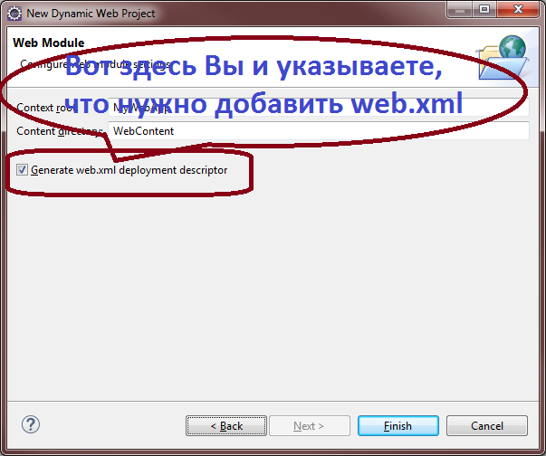
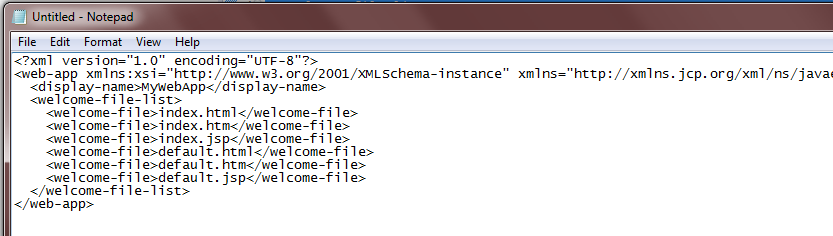

описатель развертывания, блин
 ).
).
Итак, вы стартуете Eclipse, и создаете новый Dynamic Web Project. В процессе создания проекта, вы указываете, что вам нужно сгенерировать файл web.xml, то есть выбираете checkbox Generate web.xml deployment descriptor:
В результате файл web.xml создается в вашем проекте, и изначально выглядит вот так:
Посмотрите на содержимое этого файла. Что вы видите?
Вы можете сказать, что ничего не видите, или же, что видите XML-контент на 12 строк, или даже то, что видите
Содержимое по умолчанию, которое генерирует для Вас IDE Eclipse, когда вы создаете описатель развертывания web.xml для Web-приложения на платформе Java!
И это высказывание будет наиболее точным.
И оно даже будет больше всего соответствовать стилю, который используется русскоязычными издательствами
при переводе иностранных книг по программированию (описатель развертывания
, блин
).
Но есть одна проблема... Все эти высказывания (даже последнее, самое точное) - ложь!
А в чем же ложь?
- спросите вы, или лучше даже спросить - Так в чем же тогда правда?
О-о-о, правда Вас не порадует. Ибо это страшная правда! Перед тем, как открыть ее, и перед тем как принять ее, и, главное - перед тем как начать бороться с ней, давайте еще раз взглянем на то, что нам сгенерировал Eclipse:
Так что же вы все-таки видите? Суровая реальность заключается в том, что в вышеприведенном снимке текста вы не можете видеть XML-документ, или содержимое по умолчанию для файла web.xml.
Ибо все, что представлено в этом куске текста, есть лишь
Хаос и безобразие!
Все это, не более чем
Бездумное нагромождение тэгов, атрибутов, namespace-ов, угловых скобок, и прочей текстовой анархии, от которой рябит в глазах!
И перефразировав величайшего Шелдона Купера, с горечью приходится признавать, что
В этом болоте нессиметричных тэгов, нам никогда не отыскать жабу истины!
Вы заявляете, что видите здесь XML-документ?
Я без всякого стеснения делаю многократное ХА-ХА-ХА прямо вам в лицо! Как?! Как можно видеть XML в этом сгустке?
Так это еще спасибо Eclips-у - он как мог старался для нас здесь подкрасить все по-всякому! А давайте-ка взглянем, как нам отобразит этот же текст Windows Notepad, который, как известно, не приучен церемониться с глазами людей, смотрящими в него:
Ну и где здесь теперь XML-документ? Так... Черно-белая анархия - не более того...
Вы говорите, что текста этого всего 12 строк, и можно-таки поднапрячься и все понять? И я снова без страха делаю вам ХА-ХА-ХА! (Блин, что-то я сегодня бесстрашен :))
ОК, всего 12 строк... Но таким Ваш web.xml никогда не будет! Вы создавали его для того, чтобы сконфигурировать в нем что-то вашему приложению очень нужное! Поэтому, чтобы опровергнуть Ваше заявление, я попрошу добавить в Ваше приложение всего-то:
Всего-то! Но что же мы теперь видим?
Естественно, для усиления эффекта мы снова призываем на помощь Windows Notepad:
И, вуаля! Мы все-таки получаем совершенно нечитабельный, и абсолютно непонимабельный набор символов.
И вы все-равно можете говорить
Ямшик не гони, ты гонишь, ямшик! XML-конфиг приложения здесь виден, как на ладони!
И я все-равно буду отвечать вам классическое
Поднимите мне веки!
И этот спор не закончится никогда :). (Кстати, вы замечали, что, как правило, самые жаркие и бесконечные споры разворачиваются именно вокруг вопросов, которые яйца выеденного не стоят. Наш текущий вопрос - яркое тому подтверждение :))
Ну что же... можно долго описывать проблему (о-о-о-чень долго, кричите вы читая здесь)... Можно долго спорить о проблеме... Можно долго сожалеть о случившемся...
Но, так или иначе, должен наступить момент, когда проблему нужно начинать решать. Давайте же займемся
подниманием век!
Итак, вы говорите, что вот здесь вы видите XML-документ?
Так покажите мне его! Покажите мне его явно! Покажите его вот так:
Вы же понимаете, что произошло, верно? Из-за обилия квадратов, стрелок и прочей рисованной мишуры, может быть не так явно видно, но для того, чтобы Ваши коллеги увидели, что вы собираетесь создавать XML-документ, нужно всего-то
Оставить одну пробельную строку после заголовка XML-документа!
На рисунке выше строка 2 как раз является пробельной (или другими словами - пустой). И в этой ситуации, мозг читающего будет действовать так:
Стоп! Дальше нам пока не интересно!
Ну что же, действуя таким образом, мы можем показать своим коллегам, что в текущем XML-документе мы собираемся конфигурировать Web-приложение:
...И что оно будет называться MyWebApp:
...И что у этого приложения есть индексные страницы:

И тут кстати, глядя на секцию welcome-file-list, можно спокойно задуматься -
А чего это страниц так много? По идее, должно одной хватить?...
Чувствуете? Красота структурированного XML-документа начинает приносить первые плоды - мы можем не просто всматриваться в простыню слипнувшихся строк, а осмысленно смотреть на отдельные секции конфигурации и думать, насколько эти секции верны.
Но что касается множества индексных страниц - это немного другая история.
Мы же вернемся к нашему web.xml файлу, и приведем его наконец-то в подобающий вид: